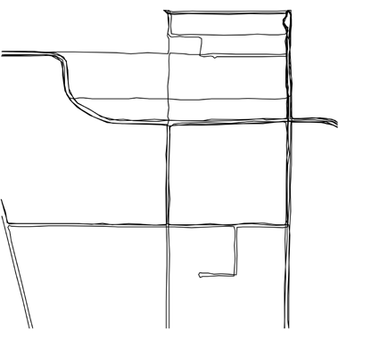
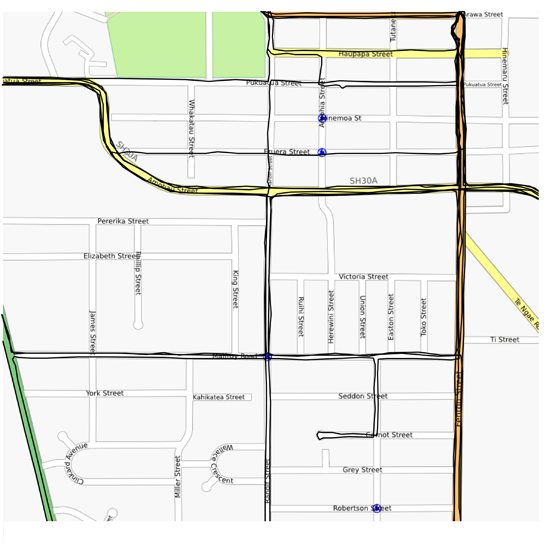
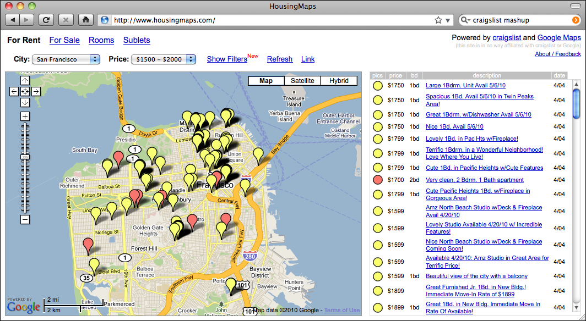

地理空间开发的应用#
Applications of geospatial development
让我们简单了解一下您可能会遇到的一些更常见的地理空间开发任务。
Let’s take a brief look at some of the more common geospatial development tasks you might encounter.
分析地理空间数据#
Analyzing geospatial data
假设你有一个包含旧金山各类地理空间数据的数据库。这个数据库可能包括地理特征、道路、显著建筑的位置，以及其他人为构建的特征，如桥梁、机场等。
这样的数据库可以成为回答各种问题的宝贵资源。例如：
索萨利托 的最长道路是什么？
奥克兰 有多少座桥梁？
金门公园 的总面积是多少？
从 Pier 39 到 Moscone Center 的距离是多少？
这些问题中的许多都可以使用诸如 PostGIS 空间增强型数据库等工具来解决。例如，计算 **金门公园**的总面积，您可以使用以下 SQL 查询:
select ST_Area(geometry) from features
where name = "Golden Gate Park";
要计算两个地点之间的距离，您首先需要 地理编码 这些位置，以获取它们的纬度和经度。可以通过多种方式进行地理编码；一种简单的方法是使用免费的地理编码 Web 服务，例如：
http://nominatim.openstreetmap.org/search?q=Pier 39, San Francisco,CA
这将返回纬度值 37.82 和经度值 -122.42。
备注
这些纬度和经度值是 十进制度数。如果你不知道这些是什么，不用担心；我们将在 第二章，GIS 中讨论十进制度数。
类似地，我们可以使用此查询找到 Moscone Center 的位置：
http://nominatim.openstreetmap.org/search?q=Moscone Center, San Francisco,CA
这将返回纬度值 37.80 和经度值 -122.44。
现在我们已经获得了两个所需位置的坐标，可以使用 Proj Python 库计算它们之间的距离:
import pyproj
lat1,long1 = (37.82,-122.42)
lat2,long2 = (37.80,-122.44)
geod = pyproj.Geod(ellps="WGS84")
angle1,angle2,distance = geod.inv(long1, lat1, long2, lat2)
print "Distance is %0.2f meters" % distance
这将打印出两点之间的距离：
距离是 2833.64 米
备注
不用担心此时的 “WGS84” 引用；我们将在 第二章，GIS 中详细讨论它的含义。
当然，您通常不会像这样进行一次性的分析——创建一个可以为任何所需数据集回答这些问题的 Python 程序更为常见。例如，您可以创建一个 Web 应用程序，显示可用计算的菜单。菜单中的一个选项可能是计算两点之间的距离；当用户选择该选项时，Web 应用程序会提示用户输入两个位置，通过调用适当的 Web 服务进行地理编码（如果位置无法地理编码，则显示错误消息），然后使用 Proj 计算两点之间的距离，最后将结果显示给用户。
或者，如果您有一个包含有用地理空间数据的数据库，您可以让用户从数据库中选择两个位置，而不是输入任意的地名或街道地址。
无论您如何组织这些计算，执行这些计算通常是您地理空间应用程序的一个重要部分。
Imagine that you have a database containing a range of geospatial data for San Francisco. This database might include geographical features, roads, the location of prominent buildings, and other man-made features such as bridges, airports, and so on.
Such a database can be a valuable resource for answering various questions. For example:
What’s the longest road in Sausalito?
How many bridges are there in Oakland?
What is the total area of the Golden Gate Park?
How far is it from the Pier 39 to the Moscone Center?
Many of these types of problems can be solved using tools such as the PostGIS spatially-enabled database. For example, to calculate the total area of the Golden Gate Park, you might use the following SQL query:
select ST_Area(geometry) from features
where name = "Golden Gate Park";
To calculate the distance between two places, you first have to geocode the locations to obtain their latitude and longitude. There are various ways to do this; one simple approach is to use a free geocoding web service, such as this:
http://nominatim.openstreetmap.org/search?q=Pier 39, San Francisco,CA
This returns a latitude value of 37.82 and a longitude value of -122.42.
备注
These latitude and longitude values are in decimal degrees. If you don’t know what these are, don’t worry; we’ll talk about decimal degrees in Chapter 2, GIS.
Similarly, we can find the location of the Moscone Center using this query:
http://nominatim.openstreetmap.org/search?q=Moscone Center, San Francisco,CA
This returns a latitude value of 37.80 and a longitude value of -122.44.
Now that we have the coordinates for the two desired locations, we can calculate the distance between them using the Proj Python library:
import pyproj
lat1,long1 = (37.82,-122.42)
lat2,long2 = (37.80,-122.44)
geod = pyproj.Geod(ellps="WGS84")
angle1,angle2,distance = geod.inv(long1, lat1, long2, lat2)
print "Distance is %0.2f meters" % distance
This prints the distance between the two points:
Distance is 2833.64 meters
备注
Don’t worry about the “WGS84” reference at this stage; we’ll look at what this means in Chapter 2, GIS.
Of course, you wouldn’t normally do this sort of analysis on a one-off basis like this—it’s much more common to create a Python program that will answer these sorts of questions for any desired set of data. You might, for example, create a web application that displays a menu of available calculations. One of the options in this menu might be to calculate the distance between two points; when this option is selected, the web application would prompt the user to enter the two locations, attempt to geocode them by calling an appropriate web service (and display an error message if a location couldn’t be geocoded), then calculate the distance between the two points using Proj, and finally display the results to the user.
Alternatively, if you have a database containing useful geospatial data, you could let the user select the two locations from the database rather than typing in arbitrary location names or street addresses.
However you choose to structure it, performing calculations like this will usually be a major part of your geospatial application.
可视化地理空间数据#
Visualizing geospatial data
假设你想要查看一个城市的哪些区域在一个普通工作日内通常会被出租车覆盖。你可能会将一个 GPS 记录仪放入出租车中，并让它记录出租车在几天内的位置。结果将是一个包含时间戳、纬度和经度值的系列数据，如下所示：
2010-03-21 9:15:23 -38.16614499 176.2336626 2010-03-21 9:15:27 -38.16608632 176.2335635 2010-03-21 9:15:34 -38.16604198 176.2334771 2010-03-21 9:15:39 -38.16601507 176.2333958 …
单独来看，这些原始数据几乎没有什么意义。但是，当你将这些数据可视化展示时，这些数字开始变得有意义：
你可以立即看到出租车通常沿着相同的街道来回行驶。如果你将这些数据作为一个 覆盖层 绘制在街道地图上，你就能准确地看到出租车的行驶轨迹：
（街道地图来自 http://openstreetmap.org ）
虽然这是一个非常简单的例子，但可视化是处理地理空间数据时的一个关键方面。数据如何被可视化展示、不同的数据集如何重叠显示，以及用户如何以可视化格式直接操作数据，都会是本书中的重要主题。
Imagine that you wanted to see which areas of a city are typically covered by a taxi during an average working day. You might place a GPS recorder into a taxi and leave it to record the taxi’s position over several days. The results would be a series of timestamps, latitude and longitude values as follows:
2010-03-21 9:15:23 -38.16614499 176.2336626 2010-03-21 9:15:27 -38.16608632 176.2335635 2010-03-21 9:15:34 -38.16604198 176.2334771 2010-03-21 9:15:39 -38.16601507 176.2333958 …
By themselves, these raw numbers tell you almost nothing. But when you display this data visually, the numbers start to make sense:
You can immediately see that the taxi tends to go along the same streets again and again. And if you draw this data as an overlay on top of a street map, you can see exactly where the taxi has been:
(Street map courtesy of http://openstreetmap.org).
While this is a very simple example, visualization is a crucial aspect of working with geospatial data. How data is displayed visually, how different data sets are overlaid, and how the user can manipulate data directly in a visual format are all going to be major topics of this book.
创建地理空间混搭#
Creating a geospatial mash-up
“混合应用”（Mash-up）这一概念近年来变得非常流行。混合应用是结合来自多个来源的数据和功能的应用程序。例如，一个典型的混合应用可能会结合一个城市中待租房屋的详细信息，并在地图上标出每个租赁位置，如下所示：
这个例子来自 http://housingmaps.com 。
Google Maps API 在创建这类混合应用时非常受欢迎。然而，Google Maps 有一些严重的许可和其他限制——它的主要竞争对手 Bing 也是如此。幸运的是，这并不是唯一的选择；像 Mapnik、 Openlayers 和 MapServer 等工具同样允许你创建将自己的数据覆盖在地图上的混合应用。
这些混合应用大多作为 Web 应用程序运行在互联网上，托管在可以被任何拥有 Web 浏览器的人访问的服务器上。有时这些混合应用是私密的，需要密码访问，但通常它们是公开可用的，任何人都可以使用。事实上，许多企业（例如前面所示的住房地图网站）就是基于自由提供的地理空间混合应用而建立的。
The concept of a “mash-up” has become popular in recent years. Mash-ups are applications that combine data and functionality from more than one source. For example, a typical mash-up may combine details of houses for rent in a given city, and plot the location of each rental on a map, as follows:
This example comes from http://housingmaps.com.
The Google Maps API has been immensely popular in creating these types of mash-ups. However, Google Maps has some serious licensing and other limitations—as does Google’s main competitor, Bing. Fortunately, these are not the only options; tools such as Mapnik, Openlayers, and MapServer, to name a few, also allow you to create mash-ups that overlay your own data onto a map.
Most of these mash-ups run as web applications across the Internet, running on a server that can be accessed by anyone who has a web browser. Sometimes the mash-ups are private, requiring password access, but usually they are publicly available and can be used by anyone. Indeed, many businesses (such as the housing maps site shown in the previous image) are based on freely-available geospatial mash-ups.